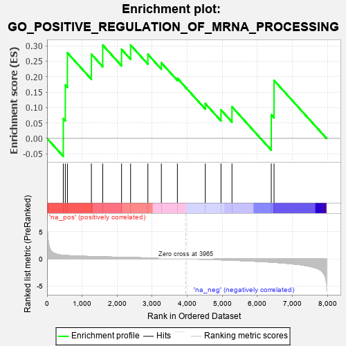
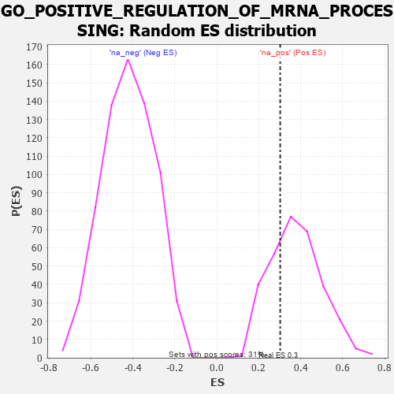

| | | Dataset | 7d |
| Phenotype | NoPhenotypeAvailable |
| Upregulated in class | na_pos |
| GeneSet | GO_POSITIVE_REGULATION_OF_MRNA_PROCESSING |
| Enrichment Score (ES) | 0.30241254 |
| Normalized Enrichment Score (NES) | 0.798906 |
| Nominal p-value | 0.72347265 |
| FDR q-value | 0.91564745 |
| FWER p-Value | 1.0 |
Table: GSEA Results Summary

Fig 1: Enrichment plot: GO_POSITIVE_REGULATION_OF_MRNA_PROCESSING
Profile of the Running ES Score & Positions of GeneSet Members on the Rank Ordered List
| PROBE | GENE SYMBOL | GENE_TITLE | RANK IN GENE LIST | RANK METRIC SCORE | RUNNING ES | CORE ENRICHMENT | | 1 | LEO1 | | | 463 | 0.655 | 0.0639 | Yes |
| 2 | SF3B4 | | | 521 | 0.622 | 0.1726 | Yes |
| 3 | CCNB1 | | | 581 | 0.601 | 0.2773 | Yes |
| 4 | CDC73 | | | 1265 | 0.436 | 0.2727 | Yes |
| 5 | PAF1 | | | 1588 | 0.376 | 0.3023 | Yes |
| 6 | TRA2A | | | 2125 | 0.287 | 0.2885 | Yes |
| 7 | NCBP2 | | | 2383 | 0.248 | 0.3024 | Yes |
| 8 | CIRBP | | | 2876 | 0.170 | 0.2723 | No |
| 9 | NUP98 | | | 3261 | 0.112 | 0.2449 | No |
| 10 | HSF1 | | | 3718 | 0.039 | 0.1948 | No |
| 11 | SNW1 | | | 4514 | -0.096 | 0.1128 | No |
| 12 | TRA2B | | | 4962 | -0.191 | 0.0923 | No |
| 13 | CELF4 | | | 5275 | -0.266 | 0.1025 | No |
| 14 | PRDX6 | | | 6396 | -0.615 | 0.0765 | No |
| 15 | CELF3 | | | 6475 | -0.651 | 0.1880 | No |
Table: GSEA details [plain text format]

Fig 2: GO_POSITIVE_REGULATION_OF_MRNA_PROCESSING: Random ES distribution
Gene set null distribution of ES for GO_POSITIVE_REGULATION_OF_MRNA_PROCESSING